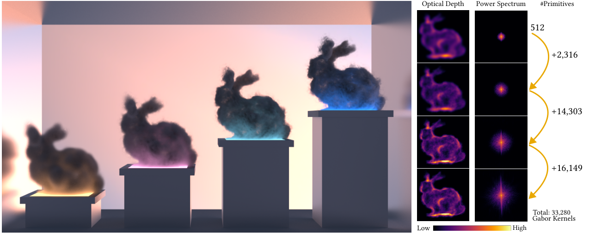
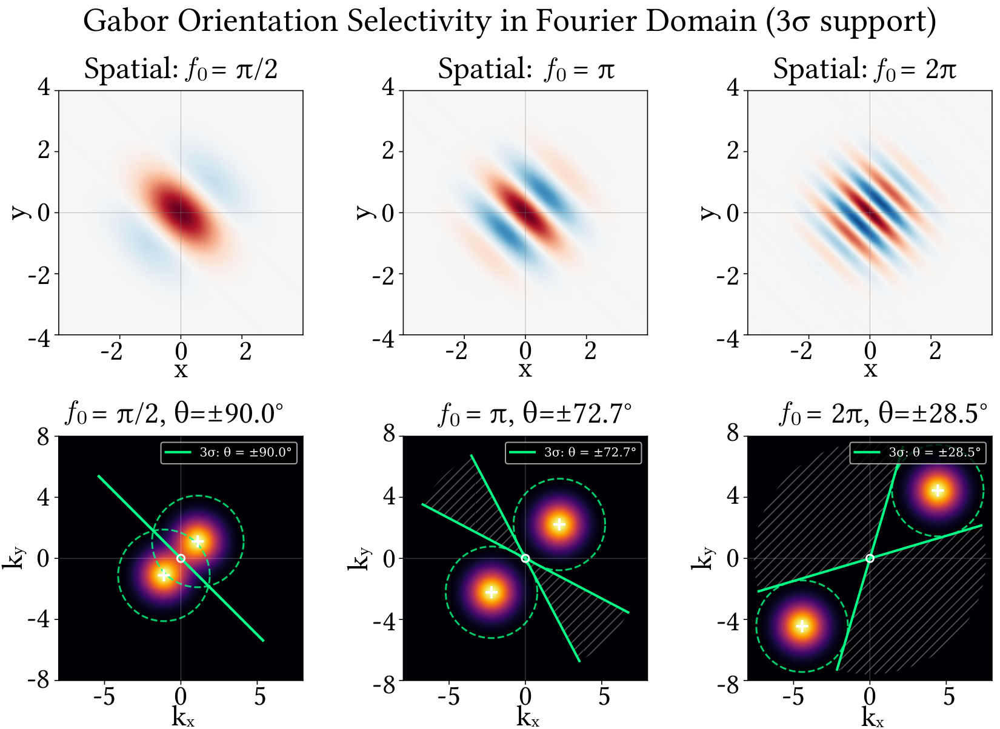
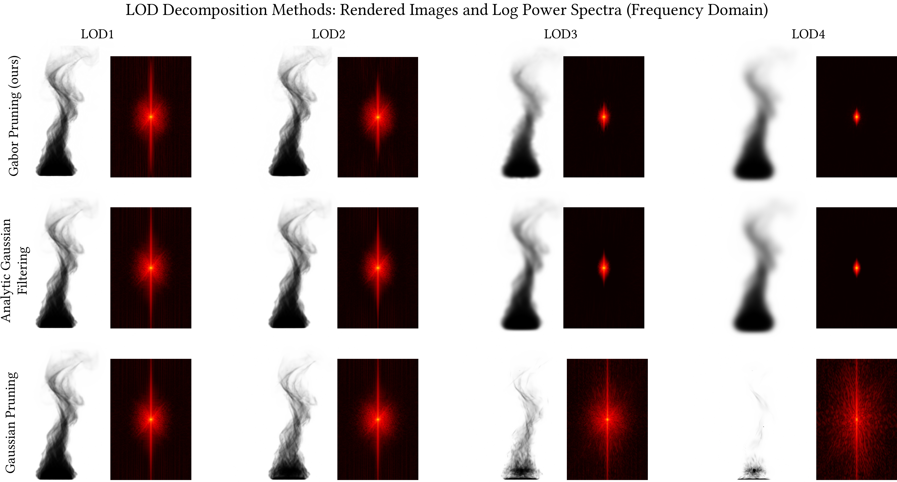
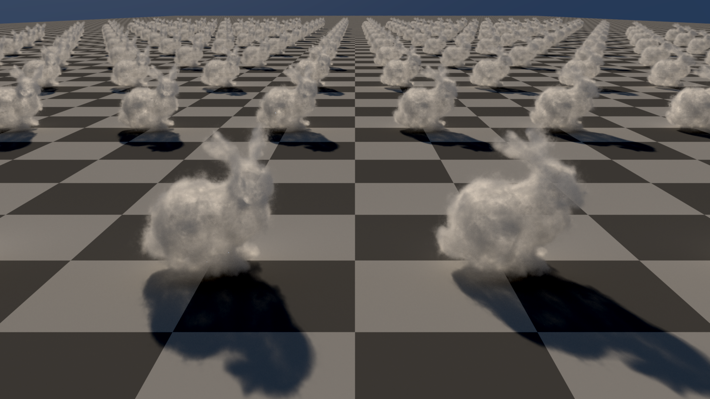
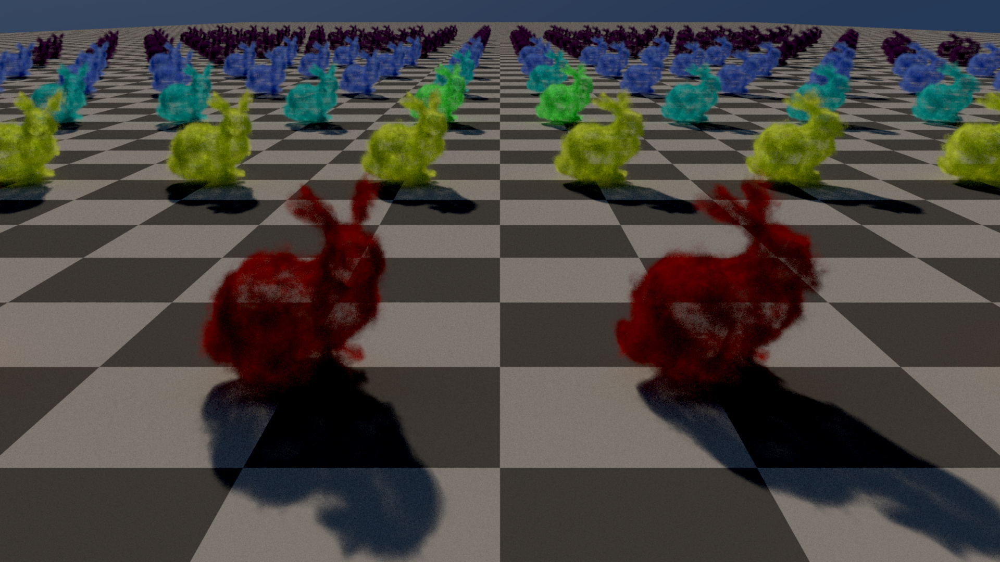
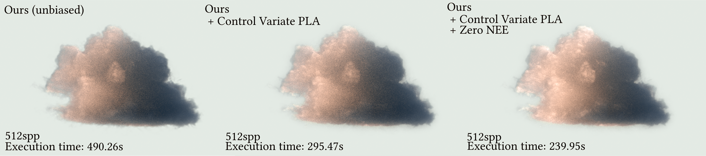
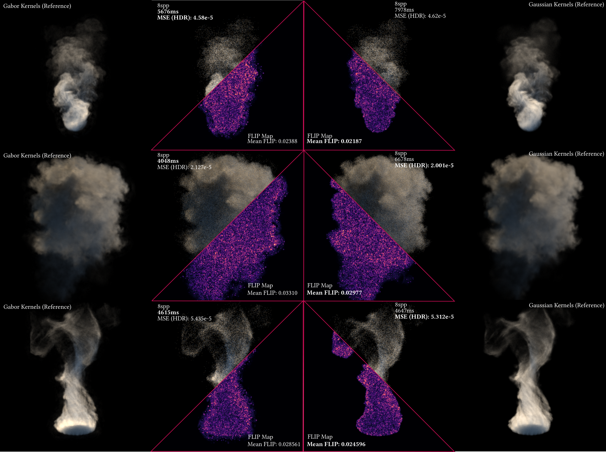
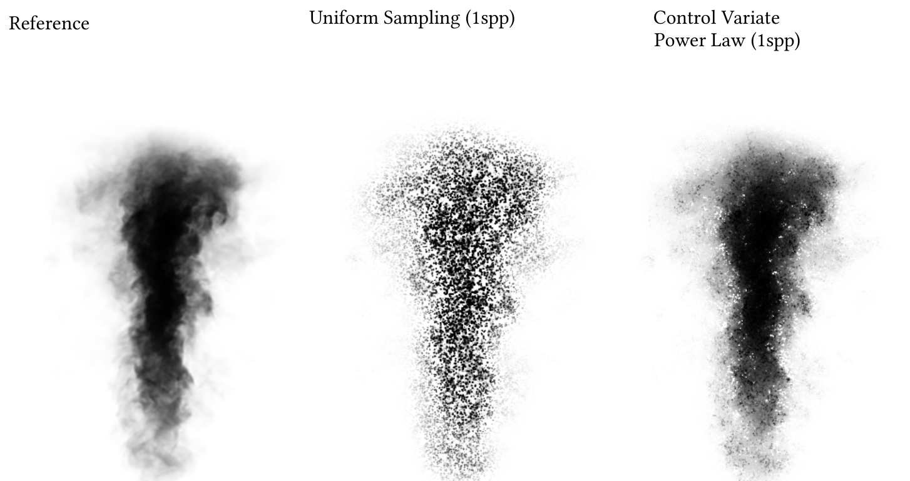
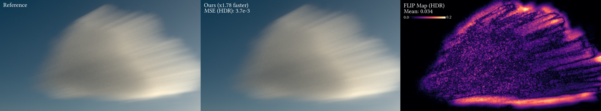

Gabor Fields: Orientation-Selective Level-of-Detail for Volume Rendering

Gaussian-based volumetric representations make physically based rendering practical at a fraction of the memory and runtime cost of dense voxel grids, but hierarchical level-of-detail (LOD) remains inneficient: prefiltering or mipmap-style Gaussians tends to cost extra memory, requires re-fitting per level, and can produce harsh transitions between LODs. We introduce Gabor Fields: mixtures of primitive anisotropic Gabor kernels (Gaussian envelopes with harmonic modulation). Limiting frequency content corresponds to pruning oriented primitives, without growing the representation. Combined with analytic line integrals and a hierarchical fitting procedure, this yields natural LOD, stochastic masking along rays for cheaper single- and multiple-scattering traversal, and allows for easy integration within volumetric path tracing frameworks.
Unlike Gaussians, each Gabor primitive is selective in both frequency and orientation: its spectrum is concentrated around a modulation frequency, which makes band-limiting the volume a matter of dropping kernels rather than convolving into ever-larger Gaussians.

Classic voxel LOD removes detail by downsampling or pruning hierarchy levels. Gaussian mixtures lack a similarly cheap spectral knob: low-pass filtering inflates supports or forces re-optimization. Gabor Fields align LOD with frequency content so coarse levels stay consistent and memory does not multiply with each mip.

Kernels that barely contribute along a given direction can be culled or sampled stochastically, which cuts traversal work in dense volumes while remaining unbiased under our sampling strategies (see paper for derivations and variance discussion).






Jorge Condor and Nicolai Hermann (joint first authors), Mehmet Ata Yurtsever, and Piotr Didyk. Gabor Fields: Orientation-Selective Level-of-Detail for Volume Rendering, ACM Transactions on Graphics (SIGGRAPH 2026).
@article{Condor2026GaborFields,
author = {Condor, Jorge and Hermann, Nicolai and Yurtsever, Mehmet Ata and Didyk, Piotr},
title = {{Gabor Fields: Orientation-Selective Level-of-Detail for Volume Rendering}},
journal = {ACM Trans. Graph.},
year = {2026},
note = {Jorge Condor and Nicolai Hermann contributed equally. SIGGRAPH 2026. arXiv:2602.05081},
url = {https://arxiv.org/abs/2602.05081}
}